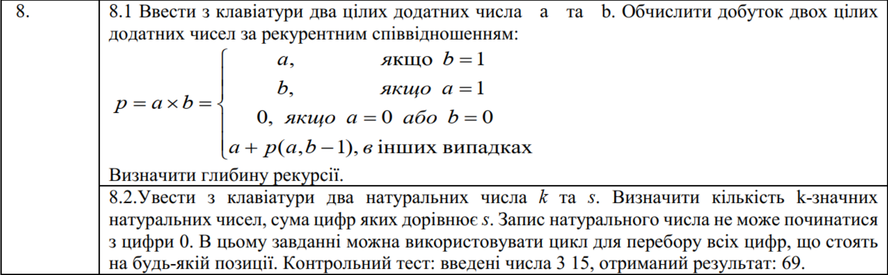
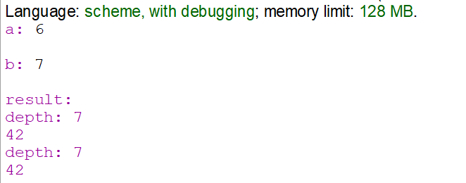
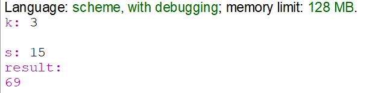

Функціональне програмування
Факультет інформаційних технологій
Кафедра програмних систем та технологій
Лабораторна робота 1
Використання рекурсії для організації повторювальних процесів
Примачук Максим Григорович
Група: ІПЗ-44мс
Викладач: Ніколаєнко А.Ю.
2023
Мета
Сформувати декларативне мислення в галузі програмування завдяки використанню чистих функцій, рекурсій замість циклів, запобіганню даних, що змінюються. Опанувати застосування рекурсивних функцій для обчислювальних процесів.
Варіант 8
Хід роботи
Обґрунтування вибору мови програмування та IDE
Для виконання роботи обрано мову програмування Scheme. Scheme - це діалект мови LISP, що робить акцент на простоті у своєму дизайні. Її часто використовують у навчальних цілях, а також для дослідження ідей та прототипування Одним з популярних середовищ для розробки програм на Scheme є IDE DrRacket. DrRacket є достатньо простим для початківців та має основні інструменти для розробки, що робить його оптимальним середовищем для вивчення та роботи зі Scheme
Завдання 1
Код
Посилання
(define (p a b depth)
(cond
; базові випадки
((= a 1)
(begin
(display "depth: ")
(display depth)
(newline)
b)
)
((= b 1)
(begin
(display "depth: ")
(display depth)
(newline)
a)
)
((or (= a 0) (= b 0))
(begin
(display "depth: ")
(display depth)
(newline)
0)
)
; рекурсивний випадок
(else
(+ a (p a (- b 1) (+ depth 1))))
)
)
(define (powerTailed a b)
(define (p2 a b acc depth)
(cond
; базові випадки
((= a 1)
(begin
(display "depth: ")
(display depth)
(newline)
b)
)
((= b 1)
(begin
(display "depth: ")
(display depth)
(newline)
acc)
)
((or (= a 0) (= b 0) (= b 1))
(begin
(display "depth: ")
(display depth)
(newline)
0)
)
; рекурсивний випадок
(else
(p2 a (- b 1) (+ acc a) (+ depth 1)))
)
)
(p2 a b a 1)
)
(display "a: ")
(define a (read))
(newline)
(display "b: ")
(define b (read))
(newline)
(display "result: ") (newline)
(display (p a b 1))
(newline)
(display (powerTailed a b))
Результат
Завдання 2
функція має 2 базові випадки: при k = 1 результатом є 1 якщо s < 9 або 0 в інакшому випадку; при s = 0 результатом є 0. Рекурсивний випадок: ініціалізація змінної count; виконання циклу, що проходить цифрами від 1 до 9, викликаючи базову функцію з параметрими k = k - 1 та s = s - i. Таким чином перевіряється вираз і + sum(i з наступних циклів) = s: якщо так, тоді здійснюєтья інкремент count. Умовою виході з циклу є i > 9 і в цьому випадку функція повертає count.
Код
Посилання
(define (countNum k s)
(cond
((= k 1) (if (and (<= 1 s) (<= s 9)) 1 0))
((= s 0) 0)
(else
(let ((count 0))
(do ((i 0 (+ i 1)))
((> i 9) count)
(set! count (+ count (countNum (- k 1) (- s i))))
)
)
)
)
)
(display "k: ")
(define k (read))
(newline)
(display "s: ")
(define s (read))
(newline)
(display "result: ") (newline)
(display (countNum k s))
Результат
Оцінка достовірності результату
При k = 3 та s = 15 результат становить 69, аналогічно до контрольного тесту. При k = 2 та s = 15 результат становить 4, що є теж вірним результатом.
Висновок
При виконанні лабораторної роботи реалізовано функцію, що множить 2 числа a та b за допомогою звичайної і хвостової рекурсії. Також реалізовано функцію, що підраховує кількість k-значних чисел, сума яких дорівнює s за допомогою рекурсії, оголишення змінної та виконання циклу.